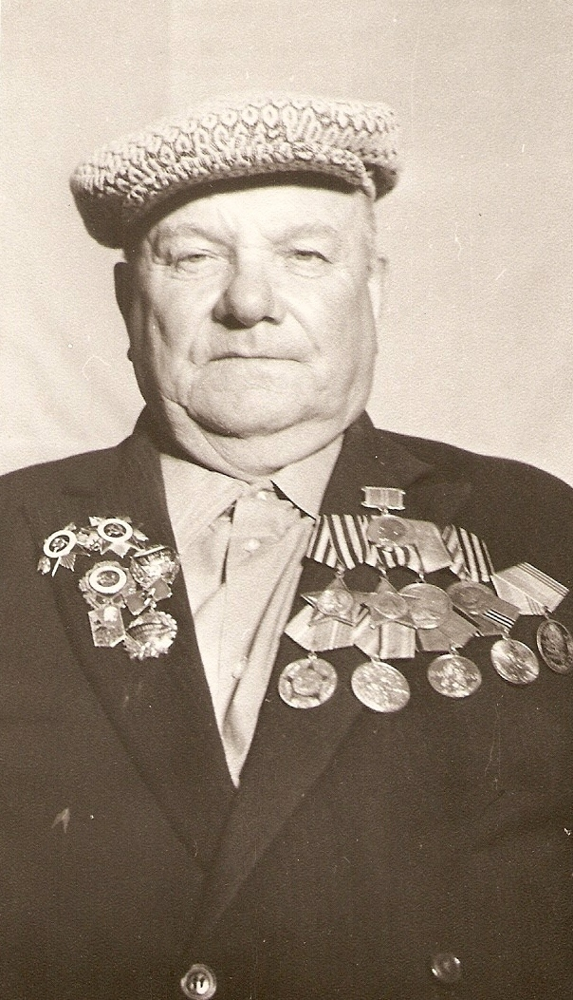

Корзников Василий Васильевич
Родился в 1926 году в д.Бакшеев Дор Нижнеентальского сельсовета. В октябре 1943 года после получения повестки прошёл военную подготовку и стал разведчиком. Воевал на севере, затем на 2-м Белорусском фронте. В 1944 году за успешную разведку и взятие «языка» был награждён медалью «За отвагу». За разгром финского гарнизона «Андронова гора» получил орден Славы III степени. Позднее за боевые заслуги был награждён орденом Славы II степени и орденом Отечественной войны II степени, а также медалями. Войну закончил в Германии. Участник Парада Победы 24 июня 1945 года.